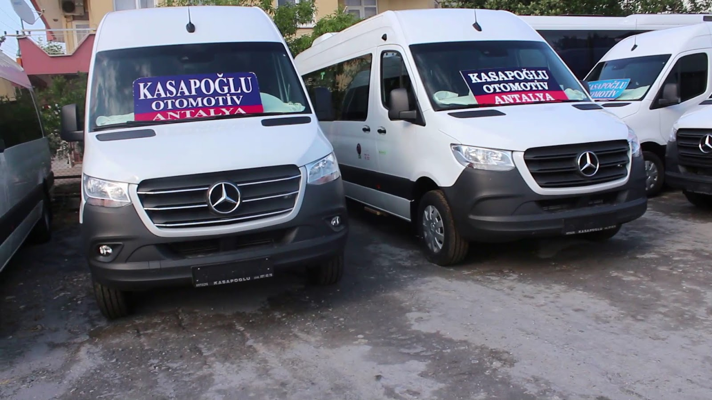
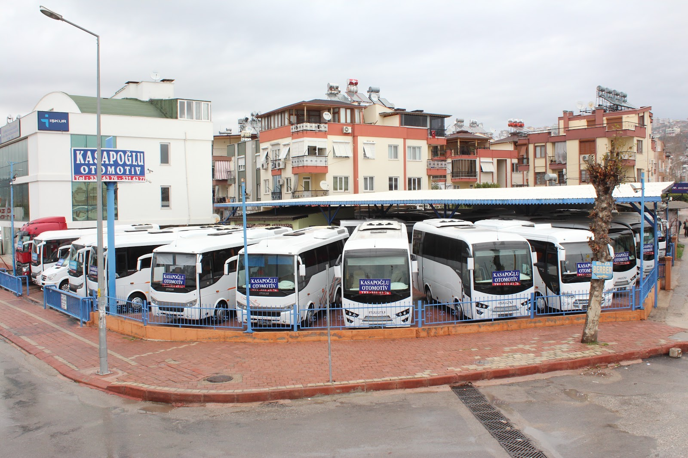
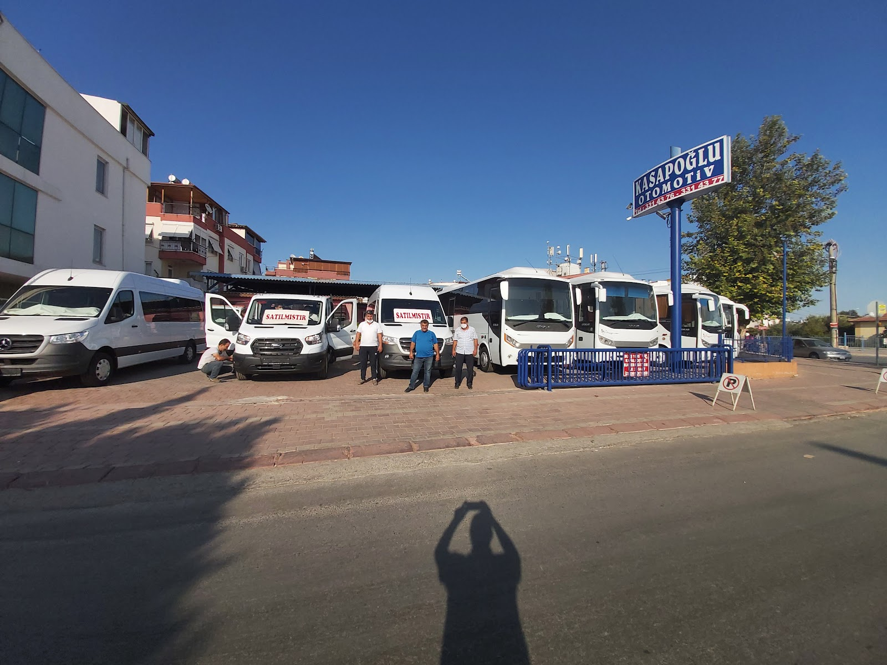

Örnek ilanMinibüs
Mercedes-Benz Sprinter 16+1
- Yıl
- 2023
- Km
- Sıfır
- Koltuk
- 16+1
- Vites
- Manuel
Fiyat için arayınBu aracı sor

Kepez · Antalya · Midibüs, minibüs ve ticari araç
Otokar, Isuzu, Mercedes Sprinter ve Ford Transit başta olmak üzere sıfır ve ikinci el ticari araçlar. Ekspertizli satış, takas, kredi desteği ve Türkiye'nin her yerine teslim.
★ 5,0 · 293 Google yorumu

Örnek ilanMinibüs

Örnek ilanÖrnek ilanlar. Gerçek ilanlarınız sahibinden.com'dan otomatik olarak bu sayfaya aktarılabilir.
293 müşterimizin ortalama puanı 5 üzerinden 5. Bunun sebebi basit:
Aracın geçmişini, ekspertizini ve eksiğini olduğu gibi söyleriz. Sürpriz çıkmaz.
Konya’dan, farklı illerden gelen müşterilerimizi karşılar; ekspertiz, noter ve teslim sürecinde yanlarında oluruz.
Mevcut aracınızı değerinde alır, kalan tutar için kredi seçeneklerini sizin yerinize araştırırız.
Servis, turizm ve personel taşımacılığı için doğru koltuk sayısı ve donanımı birlikte seçeriz.
★ 5,0 / 5 · 293 Google yorumu
“Şehir dışından gitmeme rağmen bana orada yabancılık çektirmeyen Kasapoğlu ailesine çok teşekkürler.”
Soner M. · Google
“Gerçekten dürüst esnaflar, misafirperver, her türlü yardımcı olan bir firma. Gönül rahatlığıyla araç alımlarındaki tek adres.”
Alper D. · Google
“Konya'dan gelerek Ford Custom aracımızı sorunsuz şekilde aldık. Hizmet, kalite, ilgi alaka konusunda ülkemizin nadide firmalarından.”
Vesto Promosyon · Google
Bilgileri yazın, aynı gün ekspertiz ve fiyat teklifiyle dönelim.